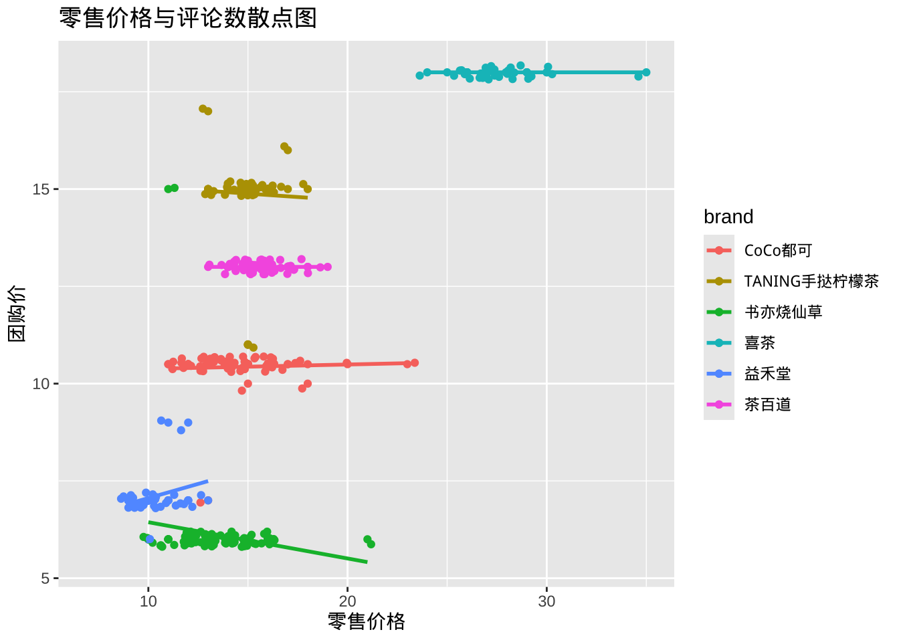
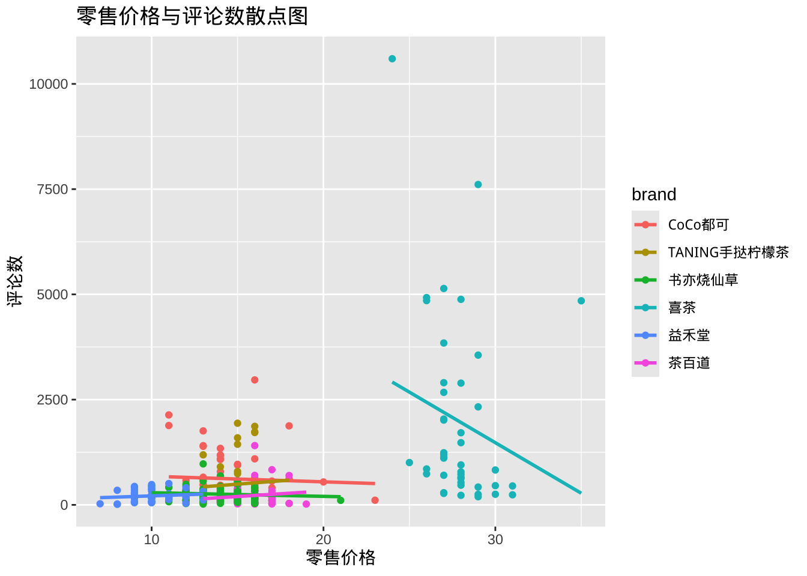
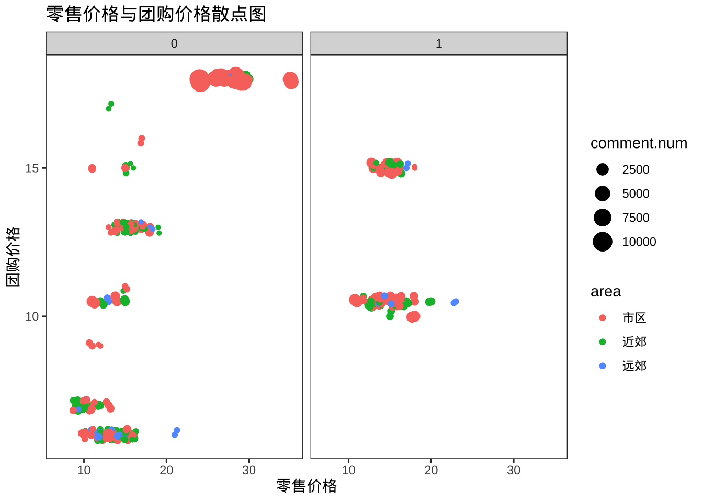

library(tidyverse)Case 1 based on Chap 3 and Chap 4
分组条形图
library(readxl)
data <- read_excel("data/top6.xlsx")#加载fct_infreq包
library(forcats)
data %>% ggplot(aes(fct_infreq(brand))) +
geom_bar(col = 6, fill = 6) +
facet_wrap(~area) +
guides(x = guide_axis(angle = 45)) +
labs(x = "品牌")data %>% ggplot(aes(fct_infreq(area))) +
geom_bar(col = 1, fill = "cyan")+
facet_wrap(~brand)+
guides(x = guide_axis(angle = 45)) +
labs(x = "品牌")堆栈条形图
#堆栈条形图
#position = "fill" 堆栈
data %>%
ggplot(aes(brand,fill = area))+
geom_bar(position = "fill",alpha=0.5)+
guides(x = guide_axis(angle = 45)) +
theme_bw()+
theme(panel.grid.major = element_blank(),
panel.grid.minor = element_blank())+
labs(title = "Brand and Area",
x = "Brand",
y = "Number")直方图
普通直方图
data %>%
ggplot(aes(retail.price))+
geom_histogram(col = 1, fill = 5, breaks = seq(2, 38, 2)) +
labs(title = "零售价直方图",
x = "团购价格",
y = "频数") +
scale_x_continuous(breaks = seq(2, 38, 2),
labels = seq(2, 38, 2)) +
theme(text = element_text(size = 15)) data %>%
filter(!is.na(groupbuy.price)) %>%
ggplot(aes(groupbuy.price))+
geom_histogram(col = 1, fill = 5, breaks = seq(2, 38, 2)) +
labs(title = "团购价直方图",
x = "团购价",
y = "频数") +
scale_x_continuous(breaks = seq(2, 38, 2),
labels = seq(2, 38, 2)) +
theme(text = element_text(size = 15)) 分组直方图
#按单个定性变量分组
data %>%
ggplot(aes(retail.price, fill = area))+
geom_histogram()+
facet_wrap(~area, ncol = 1) +
labs(title = "零售价直方图",
x = "零售价",
y = "频数") +
theme(text = element_text(size = 15)) `stat_bin()` using `bins = 30`. Pick better value with `binwidth`.data %>%
ggplot(aes(retail.price, fill = area))+
geom_density()+
facet_wrap(~area, ncol = 1) +
labs(title = "零售价直方图",
x = "零售价",
y = "概率密度") +
theme(text = element_text(size = 15)) data %>%
ggplot(aes(retail.price, color = brand, fill = brand))+
geom_histogram()+
facet_wrap(~brand, ncol = 1)+
labs(title = "零售价直方图",
x = "零售价",
y = "频数") +
theme(text = element_text(size = 15)) `stat_bin()` using `bins = 30`. Pick better value with `binwidth`.#按两个定性变量分组后的直方图
data %>%
ggplot(aes(retail.price, fill = brand))+
geom_histogram(breaks = seq(2, 38, 2))+
facet_grid(vars(brand), vars(area)) +
labs(title = "零售价直方图",
x = "零售价",
y = "频数") +
theme(text = element_text(size = 10),
legend.position = "bottom") 概率密度曲线
data %>%
ggplot(aes(retail.price, color = area))+
geom_histogram(aes(y = ..density..,
fill = area), breaks = seq(2, 38, 1))+
geom_density(lwd = 1, linetype = 1)+
facet_wrap(~area,ncol=1)Warning: The dot-dot notation (`..density..`) was deprecated in ggplot2 3.4.0.
ℹ Please use `after_stat(density)` instead.频数折线图
#分组频数折线图
data %>%
ggplot(aes(retail.price, col = area))+
geom_freqpoly(breaks = seq(2, 38, 1))+
facet_wrap(~area, ncol = 1)箱线图
简单箱线图
data %>%
ggplot(aes(retail.price))+
geom_boxplot()
data %>%
filter(!is.na(groupbuy.price)) %>%
ggplot(aes(groupbuy.price))+
geom_boxplot()分组箱线图
#facet_wrap 切面
#ncol=1 图形排成1列
data %>%
ggplot(aes(retail.price,col = area)) +
geom_boxplot() +
facet_wrap(~area, ncol=1) +
labs(title = "零售价格箱线图",
x = "零售价格",
y = "频数") +
theme(text = element_text(size = 15))data %>%
mutate(brand = reorder(brand, retail.price, FUN = median)) %>%
ggplot(aes(retail.price, col = brand)) +
geom_boxplot()+
facet_wrap(~brand,ncol=1) +
labs(title = "零售价格箱线图",
x = "零售价格",
y = "频数") +
theme(text = element_text(size = 10))按数值大小将箱线图排序
#分组箱线图，箱体按价格降序排列
#在aes()中设置X轴映射厂家
#guides(x = guide_axis(n.dodge = 3)) X轴分类标签错位
data %>%
ggplot(aes(reorder(brand,-retail.price),
retail.price,col = brand))+
geom_boxplot()+
guides(x = guide_axis(n.dodge = 3))+
labs(title ="六大奶茶品牌零售价格",
x = "品牌",Y = "零售价格")data %>%
ggplot(aes(retail.price,reorder(brand,-retail.price),
col = brand))+
geom_boxplot()+
labs(title ="六大奶茶品牌零售价格",
x = "零售价格",Y = "品牌")data %>%
ggplot(aes(retail.price,reorder(area,-retail.price),
col = area))+
geom_boxplot()+
labs(title ="六大奶茶品牌零售价格",
x = "零售价格",Y = "区域")散点图
#aes(cty,hwy,col = drv) drv映射颜色
data %>%
ggplot(aes(retail.price, comment.num,col = area))+
geom_point()+
geom_smooth(method = lm, se = F) +
labs(title = "零售价格与评论数散点图",
x = "零售价格",
y = "评论数") `geom_smooth()` using formula = 'y ~ x'#aes(cty,hwy,col = drv) drv映射颜色
data %>%
ggplot(aes(retail.price, groupbuy.price,col = area))+
geom_point()+
geom_smooth(method = lm, se = F) +
labs(title = "零售价格与评论数散点图",
x = "零售价格",
y = "团购价") `geom_smooth()` using formula = 'y ~ x'Warning: Removed 35 rows containing non-finite outside the scale range
(`stat_smooth()`).Warning: Removed 35 rows containing missing values or values outside the scale range
(`geom_point()`).data %>%
ggplot(aes(retail.price, groupbuy.price,col = brand))+
geom_point()+
geom_jitter()+
geom_smooth(method = lm, se = F) +
labs(title = "零售价格与评论数散点图",
x = "零售价格",
y = "团购价") `geom_smooth()` using formula = 'y ~ x'Warning: Removed 35 rows containing non-finite outside the scale range
(`stat_smooth()`).
Removed 35 rows containing missing values or values outside the scale range
(`geom_point()`).
Removed 35 rows containing missing values or values outside the scale range
(`geom_point()`).
data %>%
ggplot(aes(retail.price, comment.num,col = brand))+
geom_point()+
geom_smooth(method = lm, se = F) +
labs(title = "零售价格与评论数散点图",
x = "零售价格",
y = "评论数")`geom_smooth()` using formula = 'y ~ x'
#四维定量变量
#area映射颜色 comment.num 映射散点大小
data %>%
ggplot(aes(retail.price,
groupbuy.price,col = area, size = comment.num))+
geom_point()+
geom_jitter()+
facet_wrap(~voucher)+
theme_bw()+
theme(panel.grid.major = element_blank(),
panel.grid.minor = element_blank())+
labs(title = "零售价格与团购价格散点图",
x = "零售价格",
y = "团购价格")Warning: Removed 35 rows containing missing values or values outside the scale range
(`geom_point()`).
Removed 35 rows containing missing values or values outside the scale range
(`geom_point()`).
描述统计
全样本描述统计
#描述统计
library(psych)
Attaching package: 'psych'The following objects are masked from 'package:ggplot2':
%+%, alphadescribe(data) vars n mean sd median trimmed mad min max
No 1 336 168.50 97.14 168.5 168.50 124.54 1 336.0
ID 2 336 406.38 241.82 524.5 405.62 345.45 60 759.0
brand* 3 336 3.40 1.72 3.0 3.38 1.48 1 6.0
branch* 4 334 144.17 83.62 147.5 144.70 108.97 1 283.0
star 5 336 3.73 0.36 3.5 3.69 0.00 3 4.5
comment.num 6 336 564.28 1027.57 281.0 342.00 245.37 13 10598.0
retail.price 7 336 15.60 5.26 15.0 14.78 2.97 7 35.0
groupbuy.price 8 301 10.85 4.00 10.5 10.57 5.19 6 18.0
groupbuy 9 336 0.90 0.31 1.0 0.99 0.00 0 1.0
voucher 10 336 0.27 0.44 0.0 0.21 0.00 0 1.0
district* 11 336 6.35 2.42 6.0 6.23 2.97 1 11.0
area* 12 336 1.59 0.65 1.5 1.50 0.74 1 3.0
urban* 13 336 1.50 0.50 1.5 1.50 0.74 1 2.0
range skew kurtosis se
No 335.0 0.00 -1.21 5.30
ID 699.0 -0.01 -1.64 13.19
brand* 5.0 0.12 -1.22 0.09
branch* 282.0 -0.05 -1.26 4.58
star 1.5 0.65 -0.14 0.02
comment.num 10585.0 5.24 36.47 56.06
retail.price 28.0 1.53 1.72 0.29
groupbuy.price 12.0 0.22 -1.15 0.23
groupbuy 1.0 -2.58 4.67 0.02
voucher 1.0 1.04 -0.91 0.02
district* 10.0 0.40 -0.73 0.13
area* 2.0 0.65 -0.61 0.04
urban* 1.0 0.00 -2.01 0.03summary(data) No ID brand branch
Min. : 1.00 Min. : 60.0 Length:336 Length:336
1st Qu.: 84.75 1st Qu.:180.8 Class :character Class :character
Median :168.50 Median :524.5 Mode :character Mode :character
Mean :168.50 Mean :406.4
3rd Qu.:252.25 3rd Qu.:640.2
Max. :336.00 Max. :759.0
star comment.num retail.price groupbuy.price
Min. :3.000 Min. : 13.0 Min. : 7.0 Min. : 6.00
1st Qu.:3.500 1st Qu.: 137.5 1st Qu.:13.0 1st Qu.: 6.00
Median :3.500 Median : 281.0 Median :15.0 Median :10.50
Mean :3.729 Mean : 564.3 Mean :15.6 Mean :10.85
3rd Qu.:4.000 3rd Qu.: 481.5 3rd Qu.:16.0 3rd Qu.:13.00
Max. :4.500 Max. :10598.0 Max. :35.0 Max. :18.00
NA's :35
groupbuy voucher district area
Min. :0.0000 Min. :0.0000 Length:336 Length:336
1st Qu.:1.0000 1st Qu.:0.0000 Class :character Class :character
Median :1.0000 Median :0.0000 Mode :character Mode :character
Mean :0.8958 Mean :0.2679
3rd Qu.:1.0000 3rd Qu.:1.0000
Max. :1.0000 Max. :1.0000
urban
Length:336
Class :character
Mode :character
分组描述统计
#按area分组,报告retail.price的描述性统计量
data %>%
group_by(area) %>%
summarize(n(),
min = min(retail.price),
q1 = quantile(retail.price, 0.25),
median = median(retail.price),
mean = mean(retail.price),
q3 = quantile(retail.price, 0.75),
max = max(retail.price),
sd = sd(retail.price))# A tibble: 3 × 9
area `n()` min q1 median mean q3 max sd
<chr> <int> <dbl> <dbl> <dbl> <dbl> <dbl> <dbl> <dbl>
1 市区 168 8 13 15 16.5 16.2 35 5.90
2 近郊 138 7 13 14 14.7 16 30 4.20
3 远郊 30 8 11 14 14.5 16 28 5.06#按area分组,报告retail.price的描述性统计量，表格按mean降序排列
district_table <- data %>%
group_by(district) %>%
summarize(n(),
min = min(retail.price),
q1 = quantile(retail.price, 0.25),
median = median(retail.price),
mean = mean(retail.price),
q3 = quantile(retail.price, 0.75),
max = max(retail.price),
sd = sd(retail.price)) %>% arrange(desc(mean))
district_table# A tibble: 11 × 9
district `n()` min q1 median mean q3 max sd
<chr> <int> <dbl> <dbl> <dbl> <dbl> <dbl> <dbl> <dbl>
1 越秀 36 10 14 15 17.1 16 31 5.68
2 海珠 44 8 13 15 16.6 17.2 31 6.09
3 花都 6 9 13.5 15.5 16.5 17.5 28 6.41
4 荔湾 17 11 13 15 16.3 16 29 5.60
5 天河 71 9 13 14 16.3 16 35 6.05
6 南沙 7 8 10.5 14 15.6 19 28 7.04
7 白云 68 9 13 15 15.3 16 30 4.53
8 番禺 48 7 13 14.5 14.8 16 30 4.13
9 增城 15 9 11 14 13.5 14.5 23 3.52
10 黄埔 22 8 10.5 12.5 12.6 14.8 16 2.44
11 从化 2 11 11.2 11.5 11.5 11.8 12 0.707#按area分组,报告retail.price的描述性统计量，表格按`n()`降序排列
district_table <- data %>%
group_by(district) %>%
summarize(n(),
min = min(retail.price),
q1 = quantile(retail.price, 0.25),
median = median(retail.price),
mean = mean(retail.price),
q3 = quantile(retail.price, 0.75),
max = max(retail.price),
sd = sd(retail.price)) %>% arrange(desc(`n()`))
district_table# A tibble: 11 × 9
district `n()` min q1 median mean q3 max sd
<chr> <int> <dbl> <dbl> <dbl> <dbl> <dbl> <dbl> <dbl>
1 天河 71 9 13 14 16.3 16 35 6.05
2 白云 68 9 13 15 15.3 16 30 4.53
3 番禺 48 7 13 14.5 14.8 16 30 4.13
4 海珠 44 8 13 15 16.6 17.2 31 6.09
5 越秀 36 10 14 15 17.1 16 31 5.68
6 黄埔 22 8 10.5 12.5 12.6 14.8 16 2.44
7 荔湾 17 11 13 15 16.3 16 29 5.60
8 增城 15 9 11 14 13.5 14.5 23 3.52
9 南沙 7 8 10.5 14 15.6 19 28 7.04
10 花都 6 9 13.5 15.5 16.5 17.5 28 6.41
11 从化 2 11 11.2 11.5 11.5 11.8 12 0.707#按area分组,报告groupbuy.price的描述性统计量，表格按`n()`降序排列
#filter(!is.na(groupbuy.price)) 剔除有缺失值的个案
district_table <- data %>%
group_by(area) %>%
filter(!is.na(groupbuy.price)) %>%
summarize(n(),
retail.mean = mean(retail.price),
groupbuy.mean = mean(groupbuy.price)) %>%
arrange(desc(`n()`))
district_table# A tibble: 3 × 4
area `n()` retail.mean groupbuy.mean
<chr> <int> <dbl> <dbl>
1 市区 150 16.1 11.7
2 近郊 126 14.5 10.2
3 远郊 25 15.3 9.36#按品牌分组,报告retail.price的描述性统计量，表格按`n()`降序排列
#filter(`n()`>20) 选择分店数量多于20家的品牌
#MAC：`` option+tilda
brand_table <- data %>%
group_by(brand) %>%
summarize(n(),
min = min(retail.price),
q1 = quantile(retail.price, 0.25),
median = median(retail.price),
mean = mean(retail.price),
q3 = quantile(retail.price, 0.75),
max = max(retail.price),
sd = sd(retail.price)) %>% filter(
`n()`>20) %>% arrange(desc(mean))
brand_table# A tibble: 6 × 9
brand `n()` min q1 median mean q3 max sd
<chr> <int> <dbl> <dbl> <dbl> <dbl> <dbl> <dbl> <dbl>
1 喜茶 43 24 27 28 27.9 29 35 1.82
2 茶百道 58 13 15 16 15.6 16 19 1.15
3 TANING手挞柠檬茶 44 13 14.8 15 15.0 16 18 1.07
4 CoCo都可 64 11 13 14 14.4 15 23 2.01
5 书亦烧仙草 82 10 12 13 13.4 14.8 21 1.77
6 益禾堂 45 7 9 10 10.1 11 13 1.29#按brand, area两个变量分组
brand_table <- data %>%
group_by(brand, area) %>%
summarize(n(),
min = min(retail.price),
q1 = quantile(retail.price, 0.25),
median = median(retail.price),
mean = mean(retail.price),
q3 = quantile(retail.price, 0.75),
max = max(retail.price),
sd = sd(retail.price)) %>% filter(
`n()`>10) %>% arrange(desc(mean))`summarise()` has grouped output by 'brand'. You can override using the
`.groups` argument.brand_table# A tibble: 11 × 10
# Groups: brand [6]
brand area `n()` min q1 median mean q3 max sd
<chr> <chr> <int> <dbl> <dbl> <dbl> <dbl> <dbl> <dbl> <dbl>
1 喜茶 市区 32 24 27 27.5 27.9 28.2 35 1.95
2 茶百道 市区 23 13 15 16 15.7 16.5 18 1.27
3 茶百道 近郊 32 14 15 15 15.4 16 19 1.01
4 TANING手挞柠檬茶 市区 26 13 15 15 15.0 15 18 1.08
5 TANING手挞柠檬茶 近郊 16 13 14.8 15 14.9 16 16 0.998
6 CoCo都可 近郊 21 12 13 14 14.4 16 20 2.04
7 CoCo都可 市区 37 11 13 14 14.2 15 18 1.59
8 书亦烧仙草 近郊 39 10 12.5 14 13.6 15 16 1.43
9 书亦烧仙草 市区 33 10 12 13 13.2 14 16 1.72
10 益禾堂 市区 17 8 10 10 10.4 11 13 1.18
11 益禾堂 近郊 21 7 9 10 10 11 13 1.45 区间估计
总体均值的区间估计
t.test(data$retail.price)
One Sample t-test
data: data$retail.price
t = 54.381, df = 335, p-value < 2.2e-16
alternative hypothesis: true mean is not equal to 0
95 percent confidence interval:
15.03399 16.16244
sample estimates:
mean of x
15.59821 # retail.price总体均值的95%的区间估计
c(t.test(data$retail.price)$conf.int[1],
t.test(data$retail.price)$conf.int[2])[1] 15.03399 16.16244总体方差的区间估计
library(EnvStats)
Attaching package: 'EnvStats'The following objects are masked from 'package:stats':
predict, predict.lmvarTest(data$retail.price)
Results of Hypothesis Test
--------------------------
Null Hypothesis: variance = 1
Alternative Hypothesis: True variance is not equal to 1
Test Name: Chi-Squared Test on Variance
Estimated Parameter(s): variance = 27.64406
Data: data$retail.price
Test Statistic: Chi-Squared = 9260.759
Test Statistic Parameter: df = 335
P-value: 0
95% Confidence Interval: LCL = 23.89261
UCL = 32.35905# retail.price总体方差的95%的区间估计
c(varTest(data$retail.price)$conf.int[1],
varTest(data$retail.price)$conf.int[2]) LCL UCL
23.89261 32.35905 假设检验
总体均值的t检验
mean(data$retail.price)[1] 15.59821#检验retail.price总体均值是否大于15.5？
#右侧检验，显著性水平为0.01
t.test(data$retail.price,alter = "greater", mu = 15.5, conf.level = 0.01)
One Sample t-test
data: data$retail.price
t = 0.34241, df = 335, p-value = 0.3661
alternative hypothesis: true mean is greater than 15.5
1 percent confidence interval:
16.2687 Inf
sample estimates:
mean of x
15.59821 # p-value为0.001,拒绝原假设。